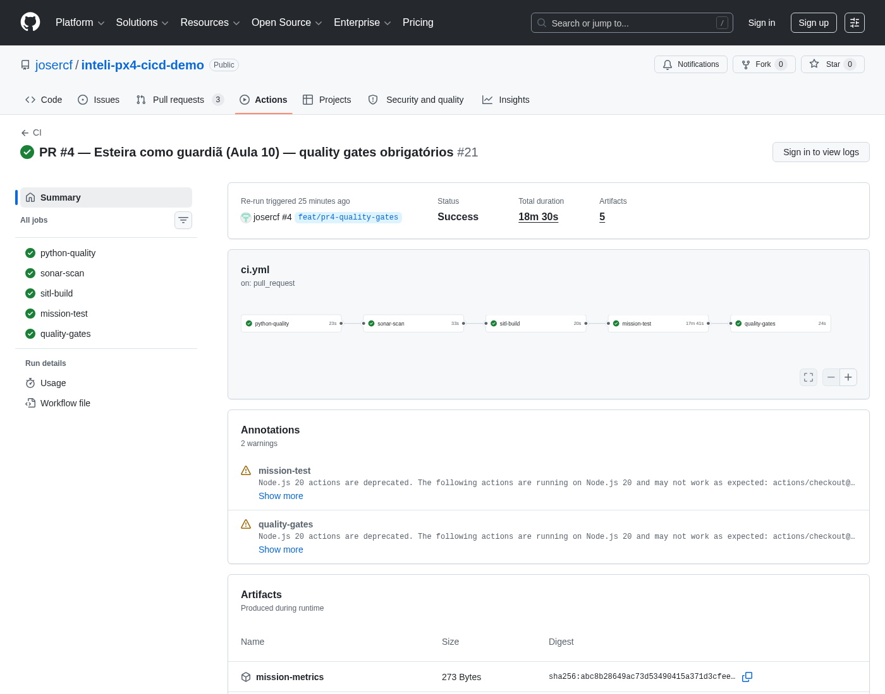
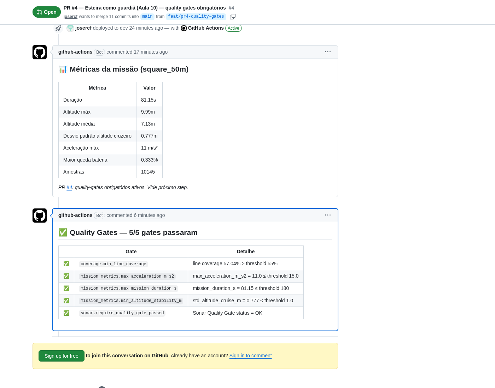

Métricas no PR já temos. Testes bons já temos. Hoje a esteira deixa de ser informativa e vira obrigatória — gate vermelho bloqueia merge.
Fechamento da Sprint 03. PR #4 transforma tudo que vocês viram nas aulas 07-09 em gates obrigatórios. Pipeline vira paralelo informativo → sequencial fail-fast. release.yml gera o artefato pra hardware. Promote orquestra ambientes.
| Bloco | Atividade | Duração |
|---|---|---|
| 10h00, Daily Time | Check-in da Sprint: PR #2 e PR #3 mergeados? | 15 min |
| 10h15, Bloco 1 | Quality gate como contrato — hierarquia de checks | 20 min |
| 10h35, Bloco 2 | Sequencial fail-fast: paralelo informativo → gate-driven | 20 min |
| 10h55, Bloco 3 | Walkthrough PR #4: quality_gates.yaml + tools/quality_gates.py | 30 min |
| 11h25, Bloco 4 | Release + promote — rollback via re-tag | 25 min |
| 11h50, Fechamento | Quiz, checklist, auto-estudo Aula 11 | 10 min |
PR #2 e PR #3 do grupo mergeados? Algum quality gate quebrou no PR de vocês? Como foi a discussão de "esse threshold faz sentido?". Uma volta rápida.
Ao fim desta aula, cada grupo entende o que diferencia "métrica informativa" de "gate obrigatório", reconhece a hierarquia de checks num pipeline maduro, sabe quando paralelo é melhor que sequencial, e identifica os componentes de um fluxo de promoção de release.
Métrica informativa (decoração) vs. quality gate (contrato). Sinais práticos pra reconhecer cada um.
Mapear a sequência lint → unit → SAST → integration → métricas → invariantes num pipeline real.
Decidir entre paralelo (feedback rápido) e sequencial (fail-fast economia) com base no custo do recurso.
Reconhecer fluxo dev→staging→prod via re-tag de imagem + ambiente com aprovação manual.
3 PRs já mergeados. Cada um adicionou uma camada. Hoje fechamos com a camada que torna tudo obrigatório.
Pipeline mínimo verde — lint, unit, sonar (informativo), build SITL, deploy-dev. Imagem GHCR rastreável por SHA.
Missão real + extração de KPIs. Comentário automático no PR com tabela de métricas. Mas merge ainda permitido se métrica regredir.
Fixtures pytest, invariantes físicos parametrizados, testing-philosophy.md. Testes mais rigorosos. Mas ainda informativos.
quality_gates.yaml versionado. Pipeline sequencial fail-fast. Sonar enforcement ON. Gate vermelho = merge bloqueado.
Métrica que ninguém respeita é decoração. Gate é regra. Hoje atravessamos essa fronteira.
Diferença não é técnica — é política. Mesmo número, mesma extração, mesma tabela. O que muda: a esteira respeita esse número.
quality_gates.yamlO reviewer não precisa mais "checar se passou no padrão". O pipeline faz. Reviewer foca no design da mudança. Code review fica mais barato e mais profundo simultaneamente.
Não é "quanto mais teste melhor" — é "qual classe de erro cada nível pega". Cada um custa mais e pega coisas que o anterior não viu.
Sintaxe, estilo, tipos óbvios. Custo: <5s. Pega 30% dos bugs simples (typo, import errado).
Lógica isolada de função pura. Custo: <1min. Pega regressão de algoritmo. Cobertura mensurável.
Análise estática de segurança + qualidade. Custo: ~30s. Pega code smells, vulnerabilities, complexity.
Sistema rodando (SITL). Custo: ~8min. Pega bugs de composição, timing, configuração.
KPIs do sistema em execução. Custo: já calculado no #4. Pega regressão de performance.
Regras absolutas + thresholds versionados. Custo: ~10s pra avaliar. Pega tudo que escapou.
Quando paralelo é melhor, quando sequencial é melhor, e por que migramos agora.
A mesma chain de checks, ordem de execução diferente. Trade-off real:
PR #1-#3 priorizou feedback (gate informativo, paralelismo ajuda). PR #4 prioriza economia + decisão (gate obrigatório — se lint falha, nada do resto importa, e gastar runner self-hosted por 25min é desperdício direto).
Antes (PRs #1-#3): 4 jobs com paralelismo. Depois (PR #4): 6 estágios sequenciais — robô avalia, humano sanciona, robô bate o martelo.
ruff + black + mypy + pytest
SAST + QG enforce
imagem GHCR
missão + KPIs
gate humano — environment quality-review
bloqueia merge se algum threshold violado
(1) needs: encadeado entre jobs. (2) sonar-scan: continue-on-error: true → false. (3) Novo job quality-gates que executa tools/quality_gates.py. (4) Novo job manual-approval antes do quality-gates — required reviewers josercf + hermanopoj, só dispara em PR.

manual-approval entre mission-test e quality-gates.quality_gates.yaml, tools/quality_gates.py, ci.yml refatorado, e o comentário automático com pass/fail.
quality_gates.yaml — thresholds versionadoscoverage:
min_line_coverage: 0.55 # baseline atual; meta 0.80 (ratchet em Sprint 04)
mission_metrics:
max_trajectory_rms_error_m: 2.0
max_acceleration_m_s2: 15.0 # limite mecânico x500
max_mission_duration_s: 180 # baseline ~85s + folga
min_altitude_stability_m: 1.0 # baseline jmavsim ~0.8; gz-sim deve reduzir
max_battery_drop_per_minute_pct: 8.0
sonar:
require_quality_gate_passed: true
max_new_blocker_issues: 0
max_new_critical_issues: 0
max_new_security_hotspots_to_review: 0Decisões na escolha
git log quality_gates.yaml mostra histórico de decisões.tools/quality_gates.py — o avaliadordef evaluate(gates_yaml, metrics_json, coverage_xml,
sonar_host, sonar_token, sonar_project_key):
config = yaml.safe_load(gates_yaml.read_text())
results = []
# 1. Coverage
cov_threshold = config["coverage"]["min_line_coverage"]
results.append(check_coverage(coverage_xml, cov_threshold))
# 2. Mission metrics
results.extend(
check_mission_metrics(metrics_json,
config["mission_metrics"])
)
# 3. Sonar (consulta API)
results.append(
check_sonar(sonar_host, sonar_token,
sonar_project_key,
require=config["sonar"]["require_quality_gate_passed"])
)
all_passed = all(r.passed for r in results)
return GatesReport(all_passed=all_passed, results=results, ...)3 fontes, 1 resultado
/api/qualitygates/project_status — devolve OK ou ERROR.quality-gates no ci.ymlquality-gates:
needs: mission-test # ÚLTIMO da chain
runs-on: ubuntu-latest
steps:
- uses: actions/checkout@v4
- uses: actions/setup-python@v5
with:
python-version: "3.11"
- run: pip install -r requirements-dev.txt
- uses: actions/download-artifact@v4
with: { name: coverage-xml }
- uses: actions/download-artifact@v4
with: { name: mission-metrics, path: reports/ }
- name: Evaluate quality gates
env:
SONAR_HOST_URL: ${{ secrets.SONAR_HOST_URL }}
SONAR_TOKEN: ${{ secrets.SONAR_TOKEN }}
SONAR_PROJECT_KEY: ${{ secrets.SONAR_PROJECT_KEY }}
run: |
python -m tools.quality_gates \
--gates quality_gates.yaml \
--metrics reports/metrics.json \
--coverage coverage.xml \
--output reports/quality_gates_result.jsonPor que esse job vem por último
quality-gates como required check.manual-approvalRobôs fizeram a parte deles (lint, SAST, build, missão). Antes do quality-gates automático bater o martelo, pipeline trava num gate humano. Pedagógico: força a turma a parar no resumo de métricas e discutir o que está olhando.
manual-approval:
needs: mission-test
if: github.event_name == 'pull_request' # só em PR
runs-on: ubuntu-latest
environment: quality-review # ← required reviewers
timeout-minutes: 60
steps:
- name: Registrar aprovação
run: echo "Aprovado por @${{ github.actor }}"
quality-gates:
needs: [mission-test, manual-approval]
if: ${{ always()
&& needs.mission-test.result == 'success'
&& (needs.manual-approval.result == 'success'
|| needs.manual-approval.result == 'skipped') }}Mecânica
quality-review: feature nativa do GitHub. Settings → Environments → required reviewers: josercf, hermanopoj (qualquer um aprova).quality-gates roda quando approval é success OU skipped.Robôs avaliam tudo. Humano confere o resumo. Robôs voltam pra dar o veredito final e liberam o merge.
Mesmo padrão do PR #2 (métricas) + uma linha por gate com pass/fail. Print abaixo é do PR #4 mergeado.

Comentário fica vermelho no gate específico, botão "Merge" do GitHub desabilita (se branch protection configurado com required check). Reviewer NÃO consegue forçar merge — só após corrigir a regressão.
Como sair do "PR mergeado" pra "binário voando" — com rollback de 30 segundos.
release.yml — quando uma tag git vira firmwareAté agora o pipeline produzia imagem SITL (pra simulador). Pra deployar em drone real, precisamos do binário hardware — saída diferente do mesmo código.
on: push: tags: ['v*']. Quando alguém faz git tag v0.1.0 && git push --tags, o workflow dispara.
make px4_fmu-v6x_default — diferente de px4_sitl_default. Produz binário pra Pixhawk físico.
Anexa .px4 (flasheável) + .sha256 (checksum). Vira "download oficial" da versão.
Só dá pra criar tag v* de um commit que está em main. main só recebe merge se quality gates passaram (PR #4). Logo: toda release publicada passou pelos gates. Cadeia inquebrável.
promote.yml — dev → staging → prodon:
workflow_dispatch: # manual
inputs:
source_tag: # ex.: dev-abc123
required: true
target_env:
type: choice
options: [staging, prod]
jobs:
promote:
runs-on: ubuntu-latest
environment: ${{ inputs.target_env }} # APROVAÇÃO HUMANA
steps:
- name: Promote (retag)
run: |
python -m tools.promote_release \
--image ghcr.io/josercf/px4-sitl \
--from ${{ inputs.source_tag }} \
--to ${{ steps.tag.outputs.target_tag }}Mecânica
docker pull SRC; docker tag SRC DST; docker push DST. Mesma imagem byte-a-byte.prod-.Drone caiu em campo. Suspeita: regressão na versão prod-abc123. Procedimento de rollback documentado:
# 1. Identifica a versão anterior que estava em prod
gh release list --limit 5
# 2. Re-tag GHCR: prod-OLD aponta pra SHA antigo
python -m tools.promote_release \
--image ghcr.io/josercf/px4-sitl \
--from prod-old_sha \
--to prod-CURRENT
# 3. Pipeline de OTA pega prod-CURRENT na próxima janela
# (ou força via gateway/OpenChoreo)A imagem velha NUNCA foi deletada — só apontamos o "ponteiro" prod-CURRENT pra ela. Rollback é gratuito porque preservamos histórico no registry. ADR-004 explicita essa estratégia.
Sua equipe descobriu que max_acceleration_m_s2 está sempre próximo do limite (14.8 de 15). Cada novo PR passa por um fio. Qual é a abordagem mais saudável?
Drone caiu em produção. Versão suspeita: prod-abc123. Versão anterior estável: prod-xyz789. Qual é o rollback CORRETO no nosso esquema?
main, publicar nova imagemgit revert do commit, esperar pipeline novoprod-xyz789 ganha tag prod-CURRENT5 critérios pra dizer que vocês têm CD que seguraria firmware crítico. Não é "tudo on dia 1" — é "ter mapa do que falta".
Imagem por SHA. Mesma imagem em todos os ambientes.
Reviewer vê KPIs antes de aprovar. Decisão tem dado.
FIRST. Invariantes físicos. Fixtures reutilizáveis.
Thresholds versionados. Merge bloqueado se regrediu.
Re-tag de imagem anterior. Testado, não suposto.
PR #1 (1), PR #2 (2), PR #3 (3), PR #4 (4+5). Vocês têm o material que separa "pipeline funcional" de "pipeline de produção crítica".
Sprint 03 fechou. Sprint 04 abre com performance + IaC. Três provocações pra Aula 11 (Hermano, 03/06):
Jeff Dean tabela atualizada. 15 min. Calibra intuição sobre custo de operações comuns (L1 cache vs disk vs network).
PX4 docs sobre perf_counter e estimativa de jitter no loop de controle. 20 min.
Talk Strangeloop, ~30 min. Como performance vira contrato (não obra de arte) num pipeline.
Print do comentário de quality-gates do PR de vocês + uma frase respondendo: "qual gate foi mais útil pra detectar regressão real durante a Sprint?".
Sprint 04 abre 03/06 — Performance e IaC